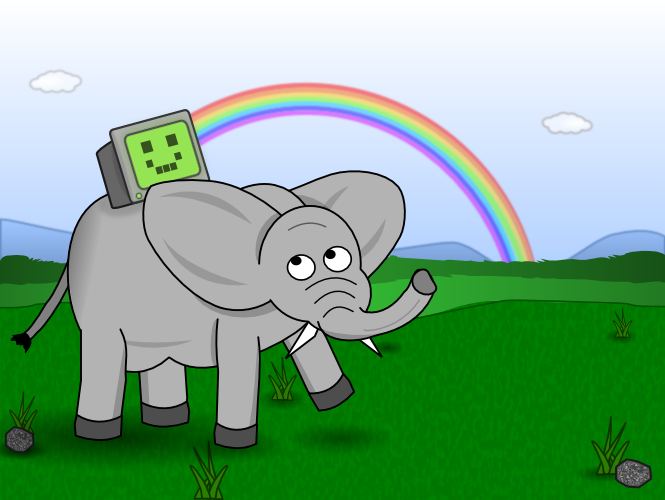
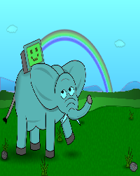
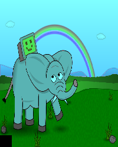
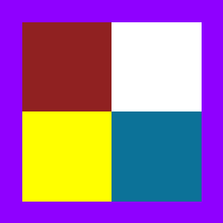
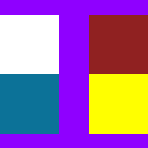

The image novice module provides a simple image manipulation interface for beginners that allows for easy loading, manipulating, and saving of image files. It has been developed collaboratively with Greg Wilson, Tony Yu, and Stephan van der Walt. Below, I show how to use the module for some basic image manipulation.
The novice module comes as a standalone package via pip (image_novice), and the source code is available on Github. We are working with the folks over at scikit-image to get novice incorporated into the next release (it's currently in their Github repo).
Loading a picture is easy with the novice module. After importing, the open method returns a Picture instance that is visible in an IPython notebook.
from image_novice import novice
picture = novice.open("sample.png")
picture

A picture knows its image format, where it came from, and its size.
print "Format:", picture.format print "Path:", picture.path print "Size:", picture.size print "Width:", picture.width Format: png Path: /home/hansenm/Projects/novice/sample.png Size: (665, 500) Width: 665
We can easily resize the picture so that it's taller than it is wide.
picture.size = (200, 250) picture
A Picture is a collection of Pixel instances. We can iterate over the pixels and modify their color components individually. Below, we halve the red value of all pixels that are more than 50% red.
for pixel in picture:
if ((pixel.red > 127) and
(pixel.x < picture.width)):
pixel.red /= 2
picture

A picture knows that it's been modified, which also resets its path to None.
print "Modified:", picture.modified print "Path:", picture.path Modified: True Path: None
Modifying a group of pixels is easy using slices. Below, we put a black box in the lower-left corner of the picture. Note that the novice module uses Cartesian coordinates (i.e., pixel 0, 0 is at the lower left).
picture[0:20, 0:20] = "black" picture

A Picture can be saved with a different format, and its corresponding properties are updated accordingly.
picture.save('sample-bluegreen.jpg')
print "Path:", picture.path
print "Format:", picture.format
print "Modified:", picture.modified
Path: /home/hansenm/Projects/novice/sample-bluegreen.jpg
Format: jpeg
Modified: False
Manipulating small images pixel by pixel can be difficult.
blocks = novice.open("block.png")
print "Size:", blocks.size
blocks
Size: (10, 10)
We can change how an image is displayed by increasing its inflation factor. An inflation factor of 10 means that a 10x10 square will be displayed for every real pixel in the image.
blocks.inflation = 10 blocks
Note that this does not modify the underlying image. The block is still the same size underneath (10x10 pixels).
blocks.size (10, 10)
Using slices, let's recolor the lower left square with yellow.
blocks[1:5, 1:5] = "yellow" blocks
We can change the inflation factor at any time:
blocks.inflation = 25 blocks
By using slices and the image's size, we can change the border to violet:
blocks[:, 0] = "violet" # Bottom blocks[:, blocks.height - 1] = "violet" # Top blocks[0, :] = "violet" # Left blocks[blocks.width - 1, :] = "violet" # Right blocks

Finally, let's swap the left and right halves of the image. First, we copy the left half. Next, we overwrite the left half with the right half. Without the copy(), this would cause the temp variable to change as well. Finally, we overwrite the right half with the copied left half.
w = blocks.width / 2 temp = blocks[:w, :].copy() # Have to make a copy here explicitly! blocks[:w, :] = blocks[w:, :] blocks[w:, :] = temp blocks

Originally posted 2014-01-16 by Michael Hansen in Tooling.
comments powered by Disqus